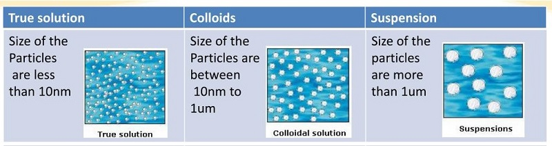

Q.3 : कणों के व्यास के आधार पर विलयन को कितने वर्गों में विभाजित कर सकते हैं ? वास्तविक विलयन (सत्य विलयन), कोलॉइडी विलयन तथा निलम्बन क्या है इसमें अन्तर स्पस्ट करे
उत्तर - कणों के व्यास के आधार पर विलयनों को निम्नलिखित तीन वर्गों में विभाजित कर सकते हैं
(i) वास्तविक विलयन (सत्य विलयन) (True Solution)
(ii) कोलॉइडी विलयन (Colloidal Solution)
(iii) निलम्बन (Suspension)

चित्र ३.१ वास्तविक विलयन, कोलॉइडी विलयन तथा निलम्बन के कणों को आकार
(i) वास्तविक विलयन (सत्य विलयन) (True Solution)- इस प्रकार के विलयन में विलायक तथा विलेय पदार्थों के कणों का व्यास लगभग समान होता है जिससे एक समांग (homogeneous) मिश्रण प्राप्त होता है। इन कणों का व्यास लगभग 10-7 से 10-5 cm होता है। इन्हें शक्तिशाली सूक्ष्मदर्शी (microscope) द्वारा भी नहीं देखा जा सकता है। इन विलयनों में सूक्ष्म आयन या अणु उपस्थित होते हैं तथा ये शीघ्रता से विसरित हो जाते हैं।
(i) यह समांगी (एक प्रावस्था)
(ii) इसमें कणों का आकार छोटा अर्थात् 1x10-8 cm होता है जो विलेय एवं विलायक दोनों का होता है।
(iii) इसके कण अतिसूक्ष्मदर्शी से दिखाई नहीं देते हैं।
(iv) अणु भार कम होता है।
(v) इसके कण साधारण फिल्टर पत्र या जन्तु झिल्ली (animal membrane) में से निकल जाते हैं
(vi) टिण्डल प्रभाव नहीं दर्शाते हैं
(vii) ब्राउनी गति नहीं होती है।
(viii) स्कन्दन नहीं होता है।
(ix) विद्युत् कण संचलन नहीं होता है।
(ii) कोलॉइडी विलयन (Colloidal Solution)- ये विलयन आँखों से तो समांग दिखाई देते हैं, परन्तु अति-सूक्ष्मदर्शी (ultra-microscope) द्वारा इनकी विषमांगता प्रकट होती है। कोलॉइडी विलयन में विभिन्न व्यासों के कण उपस्थित होते हैं। इन विलयनों में विलेय पदार्थ के कणों का व्यास 10-4 से 10-7 cm के लगभग होता है तथा विलायक के कणों का व्यास 10-7 से 10 cm होता है। इस प्रकार एक विषमांग (heterogeneous) विलयन प्राप्त होता है। जो कोलॉइडी विलयन कहलाता है। इनके कणों का आकार वास्तविक विलयन से बड़ा होता है। इसलिए ये झिल्ली के महीन छिद्रों से होकर सरलता से विसरित नहीं होते हैं।
(i) यह विषमांगी (दो प्रावस्था) होता है|
(ii) इसमें विलय एवं विलायक दोनों का भिन्न होता है। विलेय के कणों का आकार 1x10-7 से 1x10-4 cnm के बीच का होता है जबकि विलायक को 1x10-2 cm होता है।
(iii) कण केवल अति सूक्ष्मदर्शी से दिखाई देते है|
(iv) अणु भार अधिक होता है।
(v) इसके कण साधारण फिल्टर पत्र से निकल जाते हैं लेकिन जन्तु झिल्ली से नहीं निकलते हैं।
(vi) टिण्डल प्रभाव दर्शाते हैं।
(vii) ब्राउनी गति होती है।
(viii) स्कन्दन होता है।
(ix) विद्युत् कण संचलन होता है।
(iii) निलम्बन (Suspension) - इन विलयनों में विलेय के कणों का व्यास 10-4 cm से अधिक होता है। इन कणों को आँखों से तथा सूक्ष्मदर्शी से देखा जा सकता है। इसलिए ये कण गुरुत्व बल के कारण विलयन को रखने पर तली में नीचे बैठ जाते हैं। अतः कणों का व्यास बढ़ाकर हम वास्तविक विलयन से कोलॉइडी विलयन तथा अंत में निलम्बन तक पहुँच सकते हैं। इसलिए कोलॉइडी विलयन वास्तविक विलयन तथा निलम्बन के मध्य होते हैं।
(i) यह विषमांगी (दो प्रावस्था) होता है
(ii) इसमें विलेय के कणों का आकार 1x10-4 cm या 1u से 0.1u होता है।
(iii) कण साधारण सूक्ष्मदर्शी तथा नग्न आँखों से भी दिखाई देते है|
(iv) अणु भार बहुत उच्च होता है।
(v) इसके कण साधारण फिल्टर पत्र तथा जन्तु झिल्ली में से नहीं निकल सकते हैं।
(vi) टिण्डल प्रभाव दर्शाते हैं।
(vii) ब्राउनी गति नहीं होती है।
(viii) स्कन्दन होता है।
(ix) विद्युत् कण संचलन नहीं होता है।